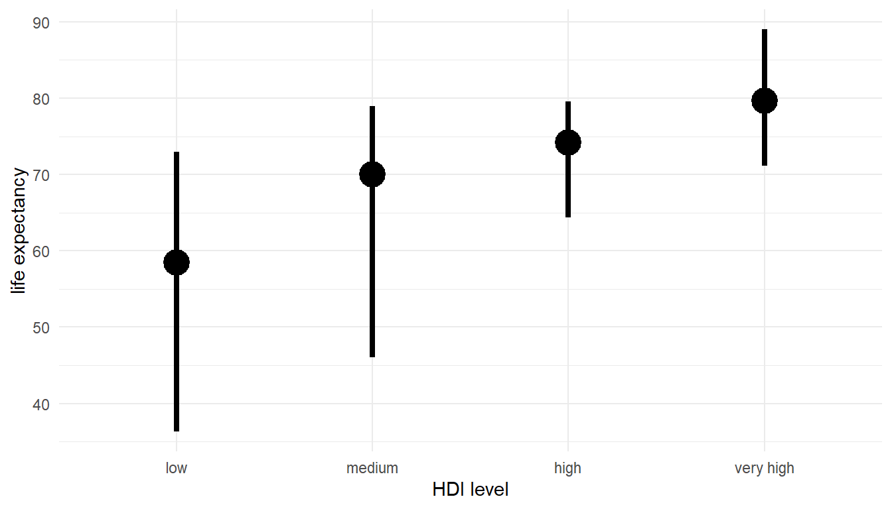
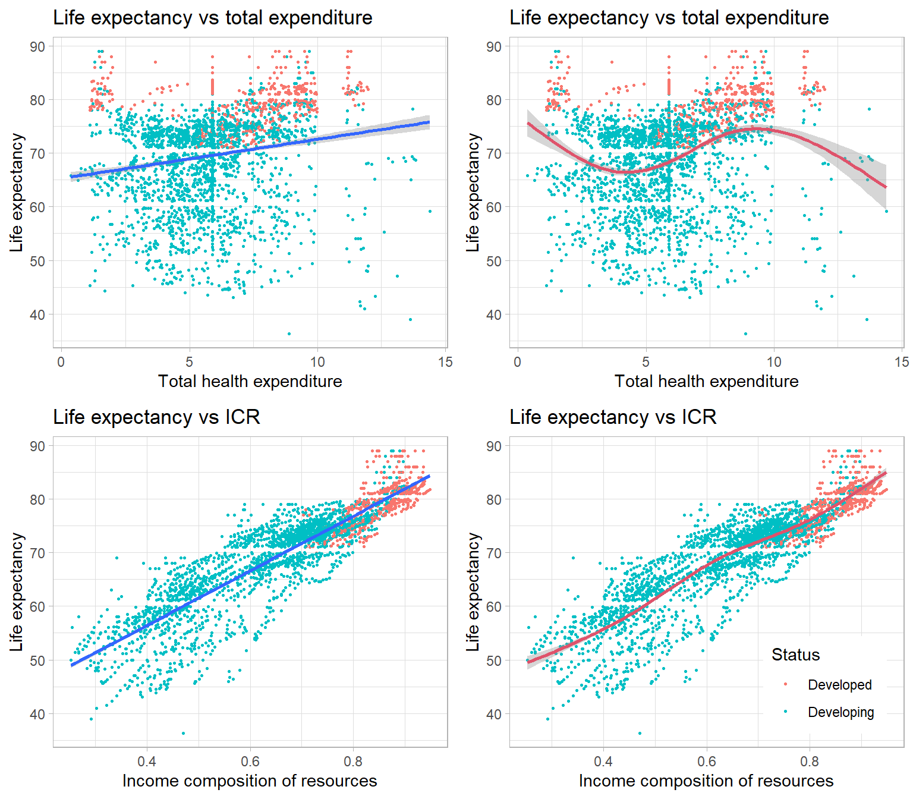

Visualizations
Shiyuan Zhou
Histograms
The first plot we have is the stacked histograms of life expectancy by expenditure level and HDI level. The proportion of each level of expenditure does not make a big difference across different ages. However, in the stacked histogram for HDI level, it is very clear that higher HDI level become more concentrated on the right, which is higher age. For different range of age, there always have a dominated HDI level. For example, for life expectancy less than 60, low HDI level dominates. Hence, according to these histograms, income composition of resources have a stronger relationship with life expectancy.
Bar Chart
According to the barcharts we have for categorical variables expenditure level and HDI level by development status, developed countries tend to have higher expenditure and income composition of resources. However, the trend between HDI level and development status is stronger.
According to the bar chart we get for expenditure level by HDI level, the proportion of low and high HDI level is the largest in the low expenditure level. The proportion of medium HDI level is the largest in medium expenditure level and also for high and very high level. Hence, we could say counties with high expenditure level have higher probability to have high HDI level. Predictors expenditure and HDI may have a linear relationship.
Statistical summary graph

According to the statistical summary graph for expenditure level, though mean of life expectancy in low level of expenditure level is higher, we may have an increasing trend between expenditure level and life expectancy. However, if we adjusted by development status, we can see that the trend is clear for developing countries but not for developed countries. The higher mean of life expectancy in low level of expenditure was pulled up by the values of developed countries as the orange points shows. Additionally, the range of life expectancy for each expenditure level as the distance from min to max is large, which means our model may not fit tightly.

The statistical summary graph we have for HDI level shows a positive relationship between human development index and life expectancy. Adjusting by development status did not make a difference on our relationship. Additionally, the distance between min and max is much shorter than that in expenditure level which indicate a strong relationship and a tighter model fit.
Scatterplots
The scatter plot of live expectancy vs total health expenditure and income composition of resources clearly present what actual model fitting will be in our dataset.

The two plots with two blue straight line on the left is the linear model fitted in each of the relationship. The two plots on the right is the cubic spline model we have, where the red curve is the fitted splines. According to the plots we have for live expectancy vs total health expenditure, the linear model is not very fitted to our data. Spline model could explain more variation and yields better fit but the decreasing trend when total health expenditure is greater than 12.5 may comes from over-fitting on the right-most points. Comparing to what we have in life expectancy vs income composition of resources, a positive linear trend is pretty clear. However, the fitted spline model does not make a big difference than the linear model. We need to further decide which model is better by adjusted R squared since spline model may have a higher adjusted R squared but the cost is over-fitting.
Copyright © 2022, Shiyuan(Eric) Zhou.